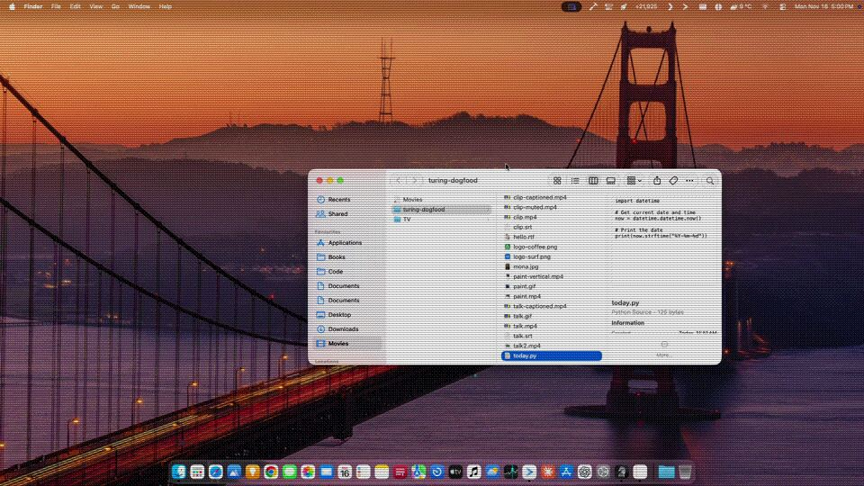

Hands
She opens your apps
Chess, Calculator, anything you have. She clicks and types for you, and stops the moment you press Escape.
Turing v8, a small model on your Mac
A small AI that lives on your Mac and does things for you. Free, private, and she asks first.
Live, in this page
She runs through what she can do while you watch. Type to take over.
A stand-in Mac in your browser. The real one runs on yours.
Small, on your Mac, yours
Trained in the open, small enough for a laptop, and every tool she uses is a plain file you can open.
Hands
Chess, Calculator, anything you have. She clicks and types for you, and stops the moment you press Escape.

Words
Notes, reminders, drafts and code, always shown to you first and saved only on your yes.

Answers
Sums, units, time zones and the weather. When she can't find a source, she says "I don't know".
Private
She runs on your Mac. Your words, files and screen never go to a server.
Careful
Anything that writes, sends or deletes waits for your yes.
Open
The pipeline, the training runs and the tools, Apache 2.0.
How she works
A half-billion-parameter model talks. A 1.5B model picks the tool. Plain rules check every pick before anything runs.
Run it yourself
The first time she needs her bigger brain, about 850 MB downloads once, in the background.
Windows
WindowsHer picker and chat, in PowerShell.
irm https://raw.githubusercontent.com/nulljosh/turing/main/install/install.ps1 | iex
Linux
LinuxHer picker and chat, in any shell.
curl -fsSL https://raw.githubusercontent.com/nulljosh/turing/main/install/install.sh | sh
Fair questions
Yes. She runs on your Mac. Your words, files and screen never go to a server. The demo on this page is a stand-in on the web, so type nothing you would not post.
Not without asking. Anything that writes, sends or deletes waits for your yes. The rules.
No. She is small, free and private, and says "I don't know" instead of guessing.
A Mac with Apple silicon runs all of her. Windows and Linux run her picker and chat. She also answers inside Joshua Tree, an OS built from scratch.